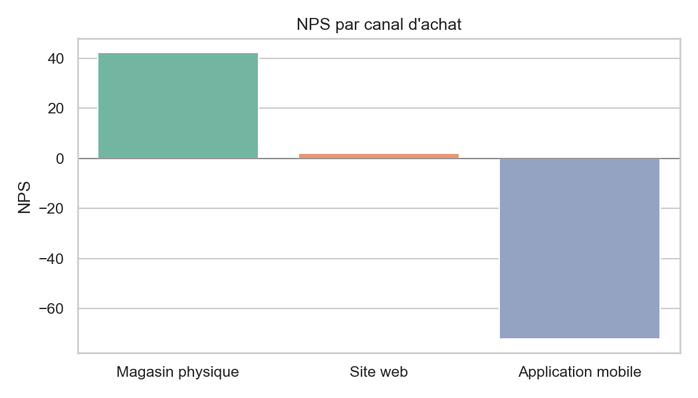
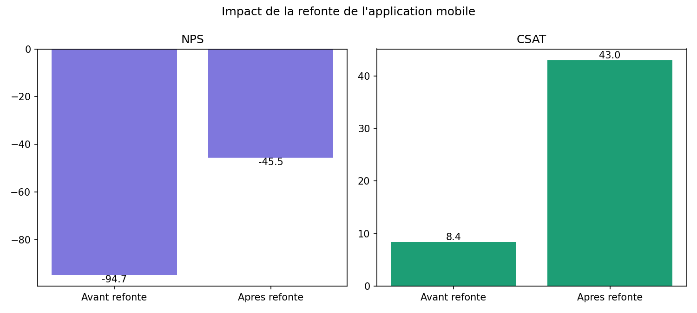
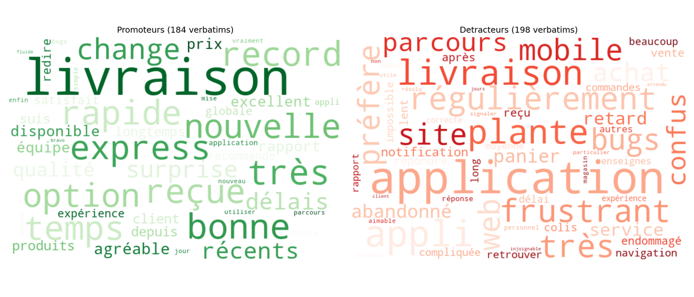
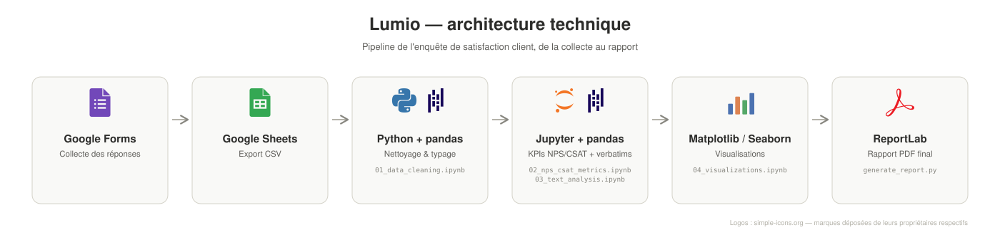

Enquête de satisfaction pour une enseigne retail omnicanale : impact de la refonte de l’app et de la livraison express sur le NPS et le CSAT Satisfaction survey for an omnichannel retail brand: impact of the app redesign and express delivery on NPS and CSAT
Pour Lumio, enseigne retail omnicanale (site web, application mobile, ~15 magasins physiques) spécialisée en équipement maison, j’ai analysé une enquête de satisfaction de 986 réponses pour mesurer l’impact de la refonte de l’application mobile et du nouveau service de livraison express, et livré un rapport PDF avec des recommandations actionnables pour les équipes produit, CX et logistique. For Lumio, an omnichannel retail brand (website, mobile app, ~15 physical stores) specialised in home & lifestyle equipment, I analysed a satisfaction survey of 986 responses to measure the impact of the mobile app redesign and the new express delivery service, and delivered a PDF report with actionable recommendations for the product, CX and logistics teams.

Évolution mensuelle du NPS par canal – avant/après la refonte de l’app Monthly NPS trend by channel – before/after the app redesign
Un export d’enquête réel n’est jamais directement exploitable. Quatre familles d’anomalies sont traitées explicitement, avec une décision documentée pour chacune plutôt qu’un nettoyage automatique aveugle. A real survey export is never directly usable. Four families of data issues are handled explicitly, with a documented decision for each rather than blind automated cleaning.

NPS = % promoteurs (note 9-10) − % détracteurs (note 0-6). CSAT en méthode top-2-box (satisfaction globale ≥ 4/5). Écart massif entre canaux : NPS = % promoters (score 9-10) − % detractors (score 0-6). CSAT with the top-2-box method (overall satisfaction ≥ 4/5). A massive gap between channels:
Google Sheets → pandas → NPS/CSAT (global + segments)

Comparaison avant/après refonte sur le canal application, avec un suivi mensuel pour isoler la tendance réelle : Before/after comparison on the app channel, with monthly tracking to isolate the real trend:
Suivi mensuel + marqueur de refonte sur la série temporelle Monthly tracking + redesign marker on the time series

Extraction des mots-clés et thèmes des réponses libres, par catégorie de répondant : Keyword and theme extraction from open-text responses, by respondent category:

De la collecte des réponses au rapport PDF final From response collection to the final PDF report
 Python
Python Matplotlib
Matplotlib
 Seaborn
SeabornLe suivi mensuel isole précisément l’effet de la refonte et montre un redressement progressif du NPS de l’application, jusqu’à repasser en territoire positif. The monthly tracking precisely isolates the redesign’s effect and shows a progressive recovery of the app’s NPS, up to turning positive again.
L’écart de satisfaction entre magasin (97% CSAT) et application (24,5% CSAT) donne à la direction une priorité sans ambiguïté pour l’allocation des ressources. The satisfaction gap between store (97% CSAT) and app (24.5% CSAT) gives leadership an unambiguous priority for resource allocation.
Rapport PDF de 7 pages entièrement généré depuis les données, avec des recommandations actionnables et un destinataire pour chacune. 7-page PDF report fully generated from the data, with actionable recommendations and an owner for each.